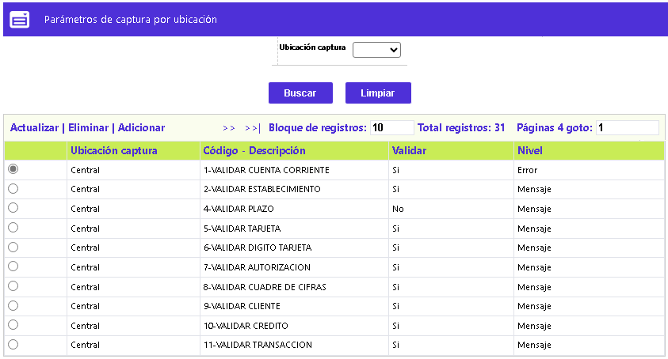
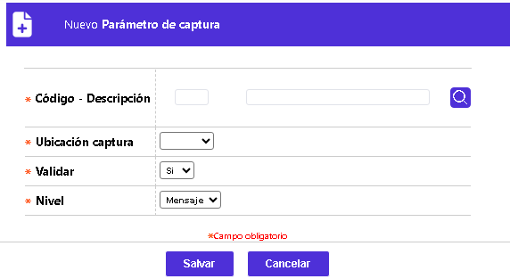
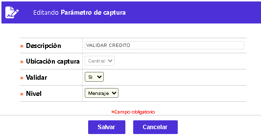

Parámetros de captura por ubicación
La funcionalidad a continuación descrita, permite a la entidad determinar las validaciones a aplicar durante la captura manual de movimiento, dependiendo de la ubicación de la captura, esto es, si es: Central, Local o Mixta. El formulario contiene los enlaces: Actualizar, Eliminar y Adicionar.

Adicionar: Al activar ese enlace se despliega el siguiente formulario:

Descripción de campos
Código - Descripción |
Campo obligatorio, que posee lista de valores poblada en parámetros de captura, de la cual debe seleccionarse o digitarse el código de la validación a adicionar o eventualmente modificar. |
Ubicación captura |
Campo obligatorio que posee lista de valores tipo combo de la que debe seleccionarse entre: Central. Local o Mixta, el tipo de captura de movimiento para la cual aplica la validación a adicionar o modificar. |
Validar |
En este campo se selecciona entre: Si o No, se debe aplicar la validación al movimiento capturado por oficina. |
Nivel |
Campo tipo combo con las opciones: Error o Mensaje, para indicar la respuesta a la aplicación de la validación efectuada; cuando se escoge la primera opción el procedimiento de validación se detiene, mientras que en el segundo caso solamente despliega un mensaje indicando la falla del mismo. |
Actualizar: Al invocar ese enlace se despliega un formulario en el cual los campos modificables son: Validar y Nivel.
